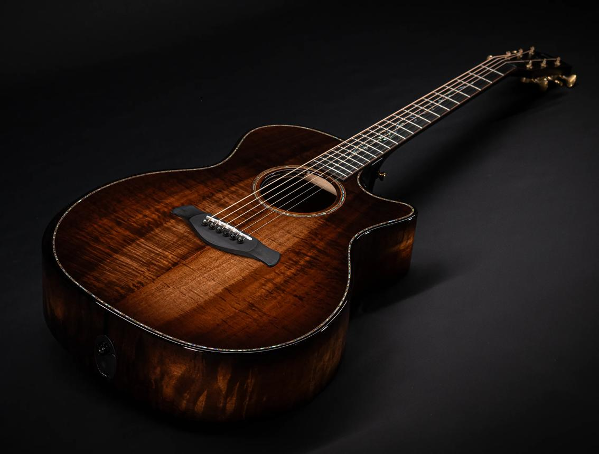

Calibración
Ajuste incluido
Seleccionamos maderas estacionadas durante décadas y mecanismos de precisión absoluta. Cada pieza es revisada y calibrada a mano.
Ajuste incluido
Material
5 años
Protección

PIEZA MAS TOP 4.9TAYLOR CUSTOM GUITARS · USA
Tapa armónica de koa hawaiana AAA · V-Class
2.000 Bs
Stock disponible · calibración incluida
+12.000 instrumentos entregados sin incidencias